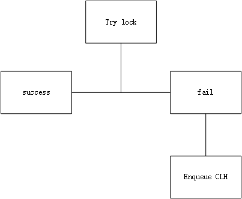

浅谈ReentrantLock:公平锁版本
上文讨论ReentrantLock的非公平锁版本，本文来说说公平锁版本。
1、FairSync如何进行lock操作？
下面为加锁的流程：

和NonFairSync的流程图比较，有两个地方不同，
(1)NonFairSync有两次try lock，而FairSync只有一次try lock。
那么，有一个疑问，既然FairSync是公平锁，为什么一开始就可以try lock，而不是放进CLH队列呢？
这就是和NonFairSync的第二个不同点了。
(2)NonFairSync和FairSync的try lock操作不一样。
先来讨论，为什么一开始就可以try lock，而不是放进CLH队列呢？
考虑两种情况：
- 如果锁未被占用，并且CLH队列本身就是空的，或者说CLH里面的节点都无效(Canceled)，那么，当前节点可以直接去竞争锁，这是公平的(因为就只有当前线程竞争锁)
- 如果当前线程已经拥有锁，即现在是重入，那么，也无需再加入CLH了。
看下FairSync版的tryAcquire:1
2
3
4
5
6
7
8
9
10
11
12
13
14
15
16
17protected final boolean tryAcquire(int acquires) {
final Thread current = Thread.currentThread();
int c = getState();
if (c == 0) {
if (!hasQueuedPredecessors() &&
compareAndSetState(0, acquires)) {
setExclusiveOwnerThread(current);
return true;
}
}
else if (current == getExclusiveOwnerThread()) {
...
setState(nextc);
return true;
}
return false;
}
首先，判断当前锁未被占用，且队列CLH无有效节点!hasQueuedPredecessors()，则直接去竞争锁compareAndSetState(0, acquires)。
如果锁已被占用，但是占用线程就是自己(重入)，那么，直接更新锁状态setState(nextc)。
2、FairSync如何进行unlock？
FairSync和NonFairSync的unlock操作完全一样。